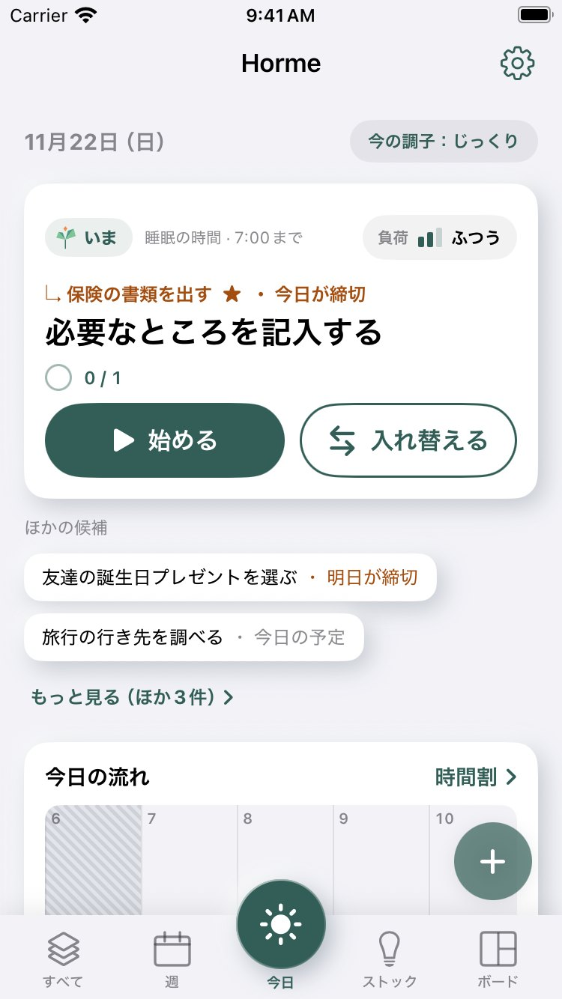
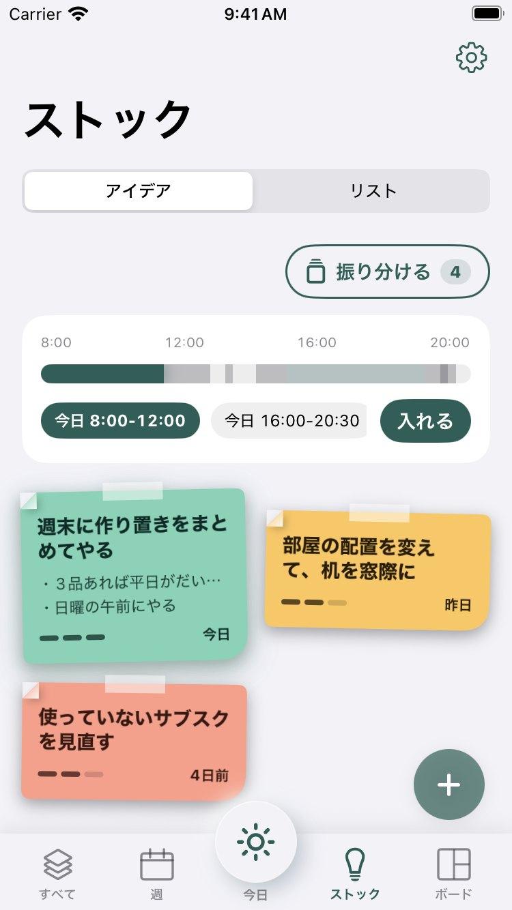
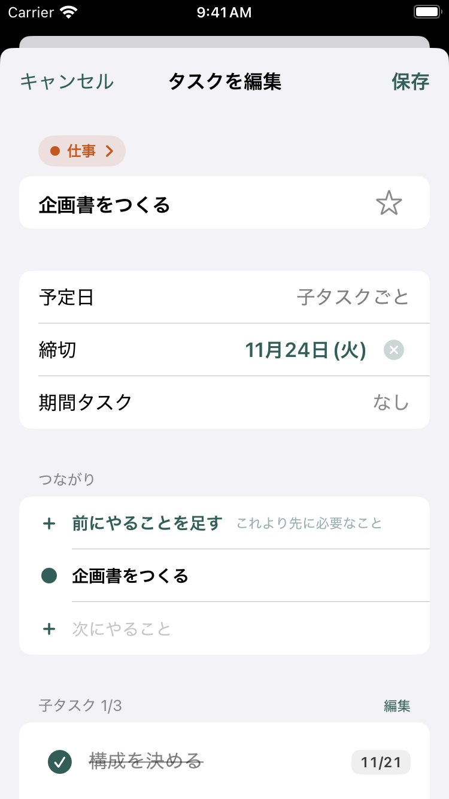
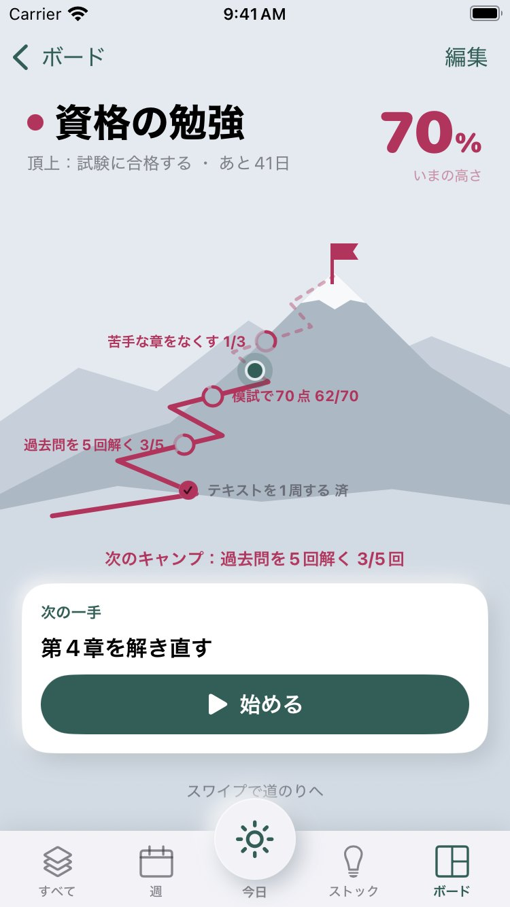
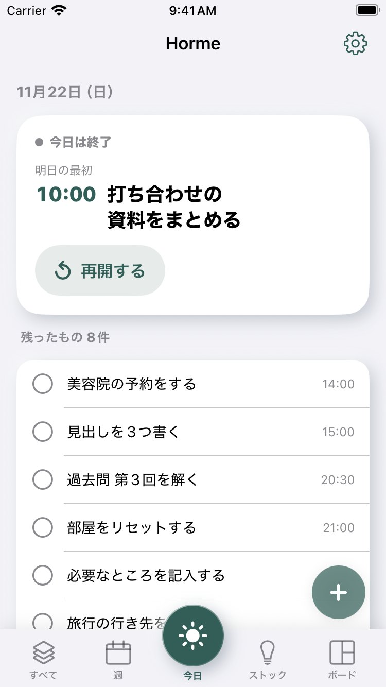
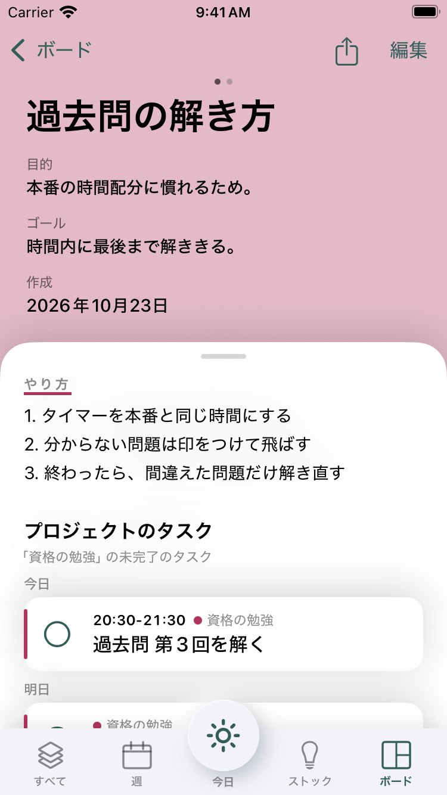

やることは、
次の1つだけ。
やることが山ほどあっても、「いま」には1つだけ。締切や今の調子に合わせて選ばれるので、始めるだけでいい。
Horme（ホルメ）は、ふと浮かんだことを書き留めて、今日の一歩にして、ちゃんと終わらせるためのタスク管理アプリです。

やることが山ほどあっても、「いま」には1つだけ。締切や今の調子に合わせて選ばれるので、始めるだけでいい。
まだ決めていないことはアイデアに。買う物や行きたい所はリストに。やると決めたら、そのままタスクにできます。
アイデアリストウィジェット
子タスクに分けると、何から手をつければいいかが分かる。旅行の準備のような決まった段取りは、パッケージでまとめて入れられます。

プロジェクトは山登り。通過点を越えるたびに、頂上が近づく。次の一手もすぐ分かります。

「今日を終える」で区切りをつけて、残ったものは責めずに振り分け。明日はまた、まっさらな気持ちで。

手順はボードに書き溜めておけます。次からは思い出さずに、すぐ始められます。

やる気が冷める前に、すぐ手が届く。実行をあと押しする仕組みが、iPhoneのあちこちに。
アイデアはいくらでも浮かぶのに、実行までたどり着けない。そんな自分のために作り始めたのがHormeです。気分や調子に波があっても、無理なく前へ進めるように。同じように悩む人の力になれたら嬉しいです。
買い切り350円でご提供しています。広告で集中が途切れることのないよう、広告は一切表示しません。一度お買い求めいただければ、追加の料金はかかりません。
お使いの端末の中に保存されます。設定で「iCloudで同期する」をオンにすると、ご自身のiCloudにもバックアップされ、機種変更のときも引き継げます。同じApple Accountのほかの端末でもオンにすると、同じデータを使えます。開発者がデータを見ることはありません。
使えます。iOS 17以降のiPhone・iPadに対応しています。iCloudで同期すると、どちらからでも同じ内容を編集できます。
できます。設定の「ほかの人と共有する」から招待すると、別のApple Accountの人ともタスクやリストを共有できます。
初めて開いたときにチュートリアルが始まります。あとからは、設定の「使い方」→「チュートリアルをはじめる」でいつでも見直せます。
不具合のご報告や、あったらいいなと思うことをお寄せください。
アプリの設定にある「ご意見・不具合の報告」からも送れます。